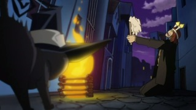

Episodes
1. Resonance of the Soul: Will Soul Eater Become a Death Scythe?
Maka and Soul have collected 99 evil souls and must defeat a witch for Weapon to become Death Scythe. They confront Blair - but a pointy black hat doesn't always mean witch.
2. Resonance of the Soul: Will Soul Eater Become a Death Scythe?
Blackâ+Star and Tsubaki want the soul of the witch that Alcapone's mob is gunning for - and the souls of the gangster goons, too. But first they'll have to deal with the witch's bodyguard, Mifune.
3. The Perfect Boy – Death the Kid's Magnificent Mission?
Death the Kid, Patty, and Liz travel to the desert to deal with a witch who's raising the dead. If the gruesome horde of mummies they find doesn't stop them, Kid's freaky obsession with symmetry might.
4. Engage the Witch Hunter! A Remedial Lesson in the Graveyard?
Maka, Soul, Blackâ+Star, and Tsubaki get a graveyard tutorial in zombie slaying after Sid, their former teacher, learns the joys of being undead. If they fail this lesson, class is dismissed for good.
5. Shape of the Soul – Enter the Ultimate Meister Stein?
Maka, Soul, Blackâ+Star, and Tsubaki tangle with the mad scientist responsible for turning Sid into a zombie - the amazingly powerful Dr. Stein!
6. The New Student – Kid's First Day at the Academy!
Death the Kid shows up for his first day at Death Weapon Meister Academy, and Blackâ+Star and Soul decide to welcome him with closed fists instead of open arms.
7. Black-blooded Terror – There's a Weapon inside Crona?
Maka and Soul's trip to Italy turns ugly when they run into Crona and Ragnarok, a Meister and Weapon team that shares a highly unusual bond.
8. Medusa the Witch – The One Who Possesses a Great Evil Soul?
Soul is seriously injured and Maka's fading fast. Death Scythe and Stein step in to make sure the weird rampage of Crona and Ragnarok comes to an end.
9. Legend of the Holy Sword – Kid and Black Star's Great Adventure?
Blackâ+Star and Death the Kid discover the worst part of searching for the Holy Sword Excalibur: finding the Holy Sword Excalibur.
10. The Enchanted Sword Masamune – Break the Soul
Blackâ+Star and Tsubaki face Masamune, and as the battle against the dark Weapon escalates, it becomes clear that Tsubaki must finish the fight alone.
11.mTsubaki, the Camellia Blossom – What Lies Beyond the Grief?
Blackâ+Star and Tsubaki will claim their first soul if they defeat Masamune - but if Tsubaki falls, she will be absorbed forever by her powerful and bitter brother.
12. Courage That Beats Out Fear - Maka Albarn's Great Resolution?
After seeing Soul's new scar, Maka searches for the strength to keep her partner safe. It could be a tough prospect - the witch responsible for the wound is dangerously close.
13. The Man with the Magic Eye - Soul and Maka's Diverging Soul Wavelength?
Maka and Soul are having trouble syncing their wavelengths, a fact that proves problematic when they find themselves fighting an immortal werewolf.
14. The Super Written Exam - Heart-Pounding, Reeling, and Restless. You're Kidding!?
There's an important exam coming, and legend says whoever gets the highest grade is destined to reach Death Scythe. Maka won't settle for anything but the best score.
15. The Soul Eating Black Dragon - Scaredy-cat Liz and Her Merry Friends?
Death the Kid and the Thompson sisters board a ghost ship full of human souls. After facing the vessel's demented captain, true evil unfurls its wings.